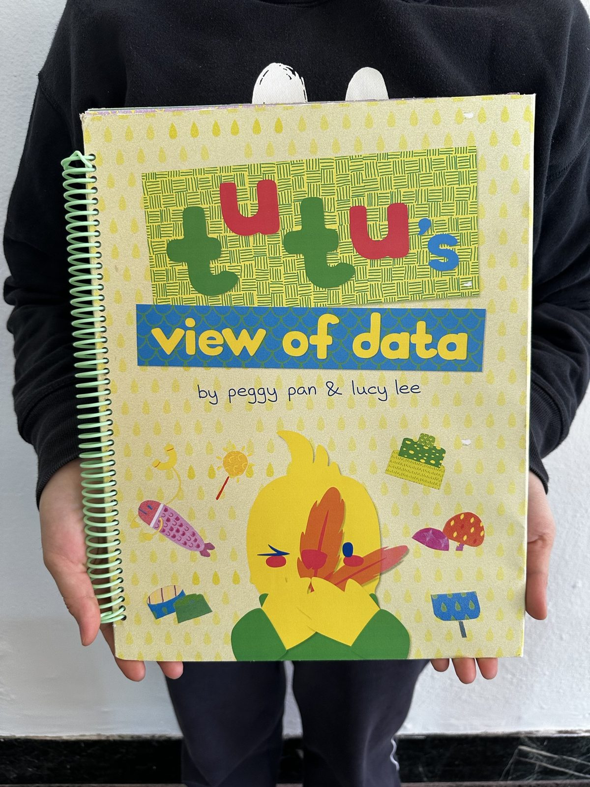

Tutu’s View of Data
An interactive picture book, map and colored pencil kit that introduces children to data through a non-intimidating, immersive experience.

I study this across Chinese and Western platforms, reading Xiaohongshu and Instagram in their own languages. In my first independent research project, forty popular AI illustration posts drew mostly praise on Instagram, while on Xiaohongshu people also discussed the work, asked how it was made, and sometimes made their own. I trained in graphic design and advertising at Boston University, and both shape how I read what creators make and how audiences respond.
Share of sorted comments that are praise. On Instagram, people mostly admire the work. On Xiaohongshu, they also discuss it, ask how it was made, and sometimes make their own. Forty posts, thirteen comment categories, and a four-level engagement framework.
How Chinese international students use conversational AI to reflect on themselves during the move into U.S. higher education, and how their cultural background shapes what that reflection gives them.
An interactive picture book, map and colored pencil kit that introduces children to data through a non-intimidating, immersive experience.
